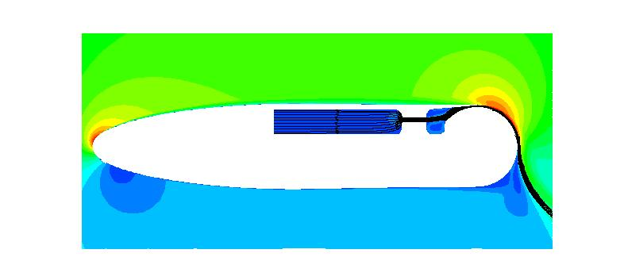

Public Access (formerly Langley Research Center)Turbulence Modeling Resource |
LES: 2-D Coanda Airfoil with Tangential Wall Jet
Return to: Data from LES - Intro Page
Return to: Turbulence Modeling Resource Home PageThe data on this page were provided by T. Nishino.
This LES case is for an airfoil with rounded (circular) trailing edge,
over which a tangential jet is blown, causing reduced trailing edge flow separation due to the Coanda effect.
The LES was run using an incompressible code, and has been documented in several publications:

Some relevant information is given here, but the
interested reader is referred to the above publications for complete details:
Long-time averaged LES data are provided for two different
blowing conditions:
Available LES data are provided below.
The files include geometry definition and long-time-averaged LES results from a grid with
800 tangential grid points around the Coanda surface, 256 spanwise grid points,
and a total of 116 million grid points in the flow field.
Other details about the LES grid and methodology can be found in the above
references.
Return to: Data from LES - Intro Page
Recent significant updates:
12/18/2019 - added "2-D" version of grid in PLOT3D format
Page Curators: Christopher Rumsey,
Ethan Vogel,
Clark Pederson
Last Updated: 11/05/2021